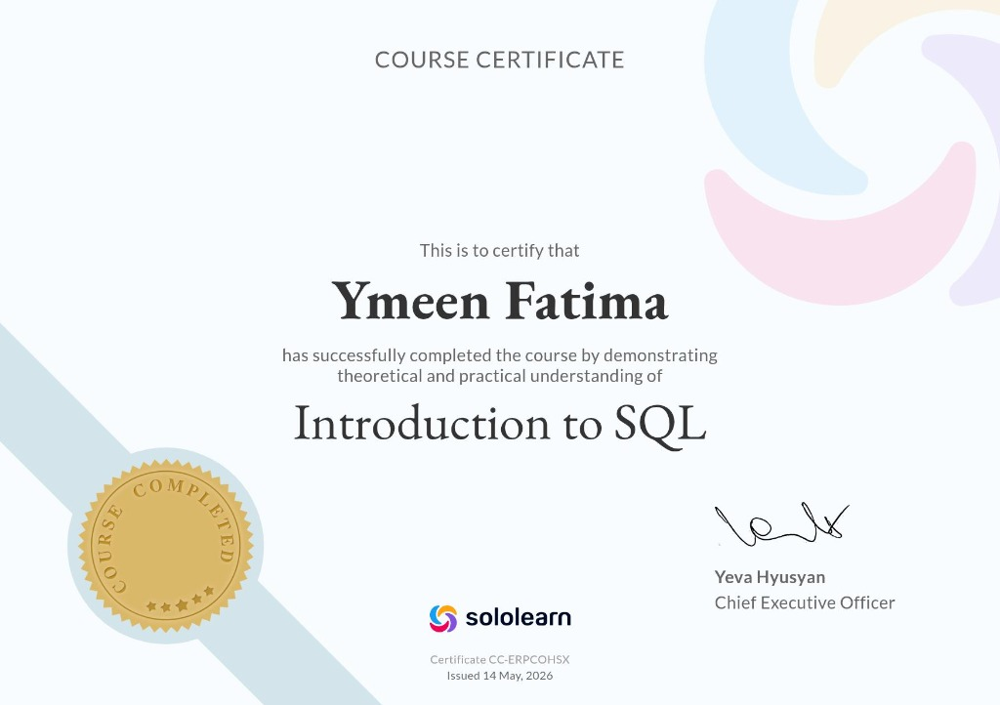
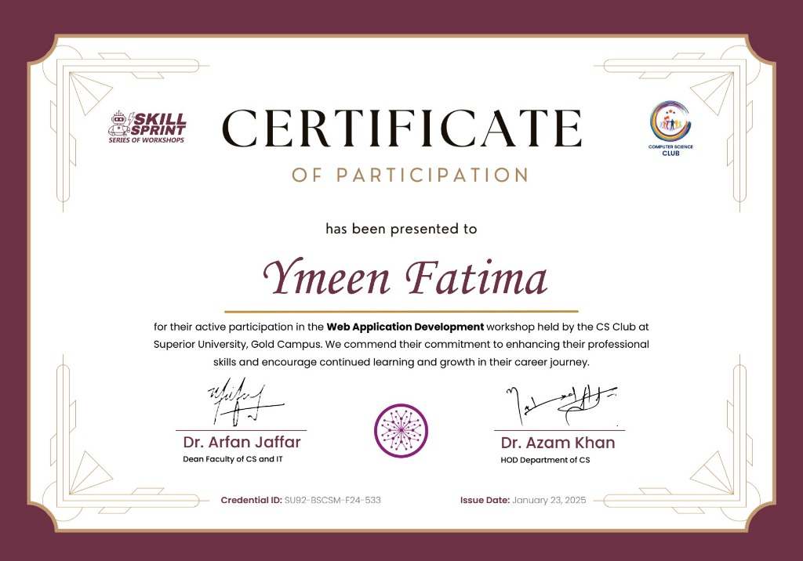
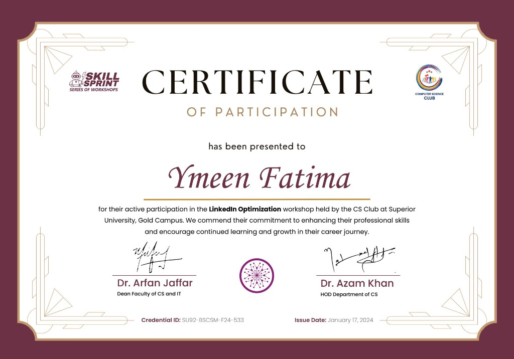

Hello, I'm
Backend Developer · Computer Science Student · Python & SQL Enthusiast
I'm a Computer Science undergraduate at Superior University, Lahore, building backend systems, relational databases, and low-level programs — all from scratch. With six independently shipped projects spanning AI chatbots, full-stack banking systems, and Assembly-level games, I bring both breadth and depth to every problem I tackle. I thrive at the intersection of clean architecture and real-world impact, writing code that doesn't just run — it holds up. Currently seeking an internship in backend development or data engineering where I can contribute meaningfully from day one.
Get To Know Me
I'm Ymeen Fatima, a backend-focused Computer Science student at Superior University, Lahore, with a CGPA of 3.61/4.0 across three completed semesters. My work spans Python, C++, SQL, JavaScript, and even Assembly — not because I had to, but because I wanted to understand systems at every layer. I've designed normalised relational database schemas, built AI-assisted chatbots, implemented data-structure-driven C++ applications, and shipped a fully functional Snake game in COAL assembly. What sets me apart is a rare combination of low-level systems fluency and full-stack thinking — I don't just write features, I think about correctness, data integrity, and scale from the start. Outside the classroom, I've voluntarily attended four professional development workshops through the CS Club SkillSprint programme, and I'm always looking for the next hard problem to solve.
To build backend systems that are reliable, efficient, and built to last — writing code that solves real problems and holds up under pressure.
To grow into a backend or data engineer who bridges the gap between low-level systems thinking and modern scalable architecture, contributing to products that matter.
My Academic Journey
Superior University, Lahore (Gold Campus)
Current Cumulative CGPA (after 3 completed semesters; results for 4th semester pending)
What I've Built
An AI-powered chatbot that guides users through symptom identification and returns structured medical guidance. Implements rule-based and ML-assisted decision logic covering approximately 20 query categories, with all responses following a defined safety-first template.
A fully dynamic web application that renders a formatted, printable CV from user input in real time using DOM manipulation. Zero backend dependency — all formatting logic runs entirely client-side.
A full-stack banking application with a normalised relational database schema — 5 tables: users, accounts, transactions, branches, and audit_log — with enforced referential integrity. The frontend enables real-time CRUD operations against the backend, handling concurrent balance updates without data anomalies.
A C++ application using linked lists, binary trees, and search algorithms to manage book records and borrowing operations for a simulated 1,000-item catalogue. Data structures were selected deliberately to achieve O(log n) search on sorted records versus O(n) for sequential scans.
Modelled patients, doctors, and appointments using class hierarchies, inheritance, and polymorphism across 8 interacting classes. System correctness was validated against 50+ simulated patient records with no scheduling conflicts or data corruption observed.
A fully functional Snake game implemented at assembly language level — direct register manipulation, interrupt-driven input, and manual memory management. One of very few undergraduates to complete a real-time game in COAL.
What I Work With
Credentials

Sololearn
2025

CS Club SkillSprint · Superior University
2024
CS Club SkillSprint · Superior University
2024

CS Club SkillSprint · Superior University
2024
Milestones from my academic journey and beyond.
2024–2025
Superior University, Lahore
Maintained a strong and upward academic trajectory across three completed semesters (GPA: 3.64 → 3.40 → 3.78), balancing coursework with six independent project builds and four professional development workshops. 4th semester completed, results pending.
2024–2025
Superior University, Lahore
Voluntarily attended four professional development workshops (Web Dev, UI/UX, Database Management, LinkedIn Optimisation) beyond classroom requirements, demonstrating consistent initiative and a growth mindset.
2025
Self-directed
Completed a fully functional Snake game in Assembly language — one of very few undergraduates to achieve this. Demonstrates rare low-level systems fluency that most students never attempt.
Get In Touch